Mendocino Travel Guide
Community despite its small size, is a scenic location on a headland surrounded by the Pacific Ocean, making it extremely popular as an artist colony and with vacationers
Places to See in Mendocino Area
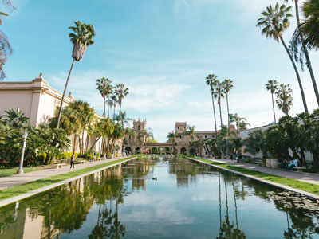
Matthew T Rader, CC BY-SA 4.0, via Wikimedia Commons; Image Size Adjusted

Caspar Headlands State Beach
A scenic coastal park featuring a sheltered sandy cove, rugged headlands, and panoramic ocean views ideal for wildlife viewing and beachcombing.
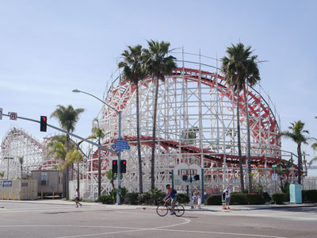
Visitor7, CC BY-SA 3.0, via Wikimedia Commons; Image Size Adjusted

Caspar Headlands State Natural Reserve
A rugged coastal reserve featuring, and panoramic ocean views known for tide pooling and seasonal whale watching.
Glass Beach
Beach adjacent to MacKerricher State Park near Fort Bragg, CA, named from abundant sea glass created from years of dumping garbage into an area of coastline near the northern part of the town.
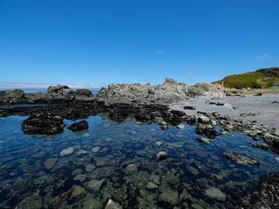
Sharon Mollerus, CC BY 2.0, via Wikimedia Commons; Image Size Adjusted

MacKerricher State Park
State park located 3 miles north of Fort Bragg, covering 9 miles of coastline and contains beaches, dunes, headlands, coves, wetlands, tide pools, forest, and a freshwater lake
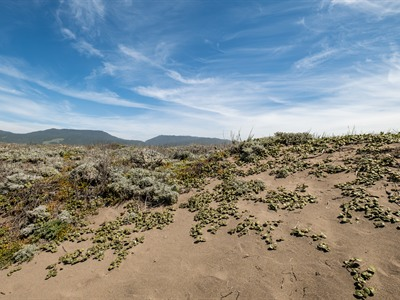
Sharon Mollerus, CC BY 2.0, via Wikimedia Commons; Image Size Adjusted

Manchester State Park
A coastal park with expansive sandy beaches, rolling dunes, and grassy meadows offering scenic ocean views and opportunities for fishing and wildlife observation.
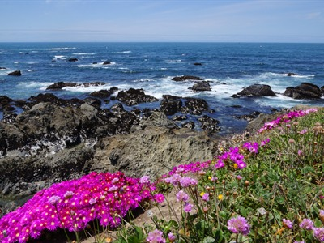
Allie Caulfield, CC BY 2.0, via Wikimedia Commons; Image Size Adjusted

Mendocino Coast Botanical Garden
A coastal garden spanning oceanfront bluffs, forests, and wetlands, showcasing vibrant floral collections and native ecosystems shaped by a mild maritime climate.
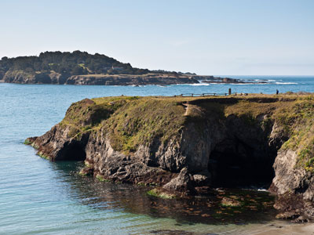
alans1948, CC BY 2.0, via Wikimedia Commons; Image Size Adjusted

Mendocino Headlands State Park
State park consisting of 347 acres of undeveloped seaside bluffs and islets surrounding the town of Mendocino, two beaches, and the much larger Big River Unit

Navarro River Redwoods State Park
A serene stretch of towering second-growth redwood groves lining a scenic river corridor, offering picnicking, wildlife viewing, and peaceful immersion in a lush forest landscape.
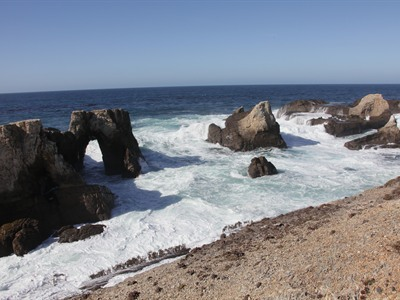
U.S. Department of the Interior, CC BY-SA 2.0, via Wikimedia Commons; Image Size Adjusted
_(11207621403).jpg){kind=link}
Point Arena Stornetta Public Lands
Expansive coastal preserve featuring rugged cliffs, sweeping ocean vistas, wildlife-rich habitats, and scenic trails across untouched shoreline landscapes.
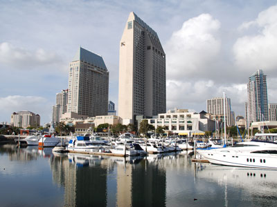
FASTILY, CC BY-SA 3.0, via Wikimedia Commons; Image Size Adjusted

Railbikes on the Noyo
A guided electric-assist railbike adventure that carries riders along a historic railway through towering redwood forests, across trestle bridges, and beside a tranquil river.
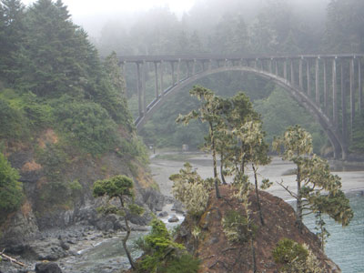
Doreeno, CC BY-SA 2.0, via Wikimedia Commons; Image Size Adjusted

Russian Gulch State Park
Park features 7,630 ft of rocky ocean shores .75 mi wide from north to south at its widest point, and extends for three miles from east to west
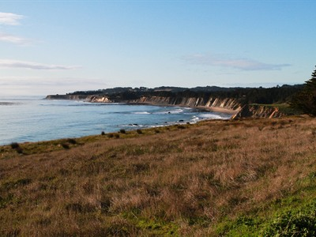
Lisa Redfern, CC BY-SA 3.0, via Wikimedia Commons; Image Size Adjusted

Schooner Gulch State Beach
A secluded coastal cove framed by rugged bluffs and ocean vistas, featuring sandy beaches, tide pools, and rare spherical rock formations revealed at low tide.
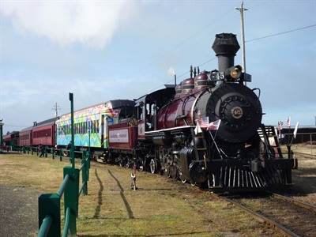
Effervescing Elephant, CC BY-SA 2.0, via Wikimedia Commons; Image Size Adjusted

Skunk Train
Historic train excursions carrying passengers through old-growth redwood forests, across wooden trestles, and into scenic river canyons aboard restored vintage railcars.
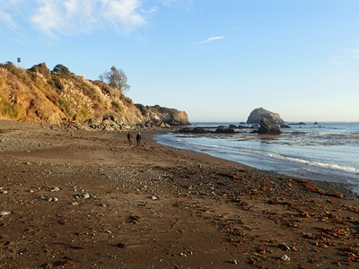
Krzysztof Ziarnek, Kenraiz, CC BY-SA 4.0, via Wikimedia Commons; Image Size Adjusted

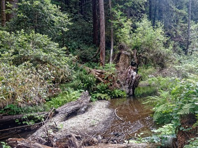
Dirtsc, CC BY-SA 3.0, via Wikimedia Commons; Image Size Adjusted

Van Damme State Park
A diverse coastal reserve where a sheltered beach meets fern-filled river canyons, redwood groves, and a rare pygmy forest shaped by centuries of unique soil conditions.
How to Get There
From San Francisco (155 mi): Take Franklin St and Lombard St to US-101/Presidio Pkwy. Follow US-101 to CA-128 W in Sonoma County. Take exit 522 from US-101. Continue on CA-128 W. Drive to Little Lake St in Mendocino.
Overview
Mendocino is a small coastal village of about 700 people on a headland above the Pacific, in the northern California coast about 150 miles north of San Francisco. Its New England-style buildings, water towers, art galleries and inns sit among rugged bluffs, sea stacks and meadows, and it has long been an artists' colony and a romantic getaway.
Visitors come for the dramatic coastline, whale watching, kayaking, hiking, the village's shops and restaurants, and for scenery from state parks and beaches. The area was also the setting for the television series Murder, She Wrote, and its main street is a popular place to browse galleries and local wineries.
History
Pomo people lived on the Mendocino coast for thousands of years. The name comes from Cape Mendocino, named for Antonio de Mendoza, the first viceroy of New Spain. Lumber was the town's reason for being: the Mendocino Lumber Company built a sawmill in 1852, and settlers from New England, Finland, China and Portugal arrived to cut redwood for San Francisco. The mills closed in 1938, and artists and tourists revived the town after the 1950s.
Sightseeing and Popular Landmarks
The Mendocino Headlands State Park surrounds the village with trails, sea caves and coves. Nearby are Glass Beach in Fort Bragg, the Skunk Train, Point Cabrillo Light Station, Russian Gulch State Park's Devil's Punch Bowl and Van Damme State Park's fern canyon. The Mendocino Coast Botanical Gardens, MacKerricher State Park and the Big River estuary are also easy trips.
Culture and Museums
The Kelley House Museum, in a house built in 1861, tells the local logging and settlement story, and the Ford House Museum is the visitor center for the headlands. The Mendocino Art Center, founded in 1959, offers galleries and classes, and festivals include the Mendocino Whale Festival in March, the Mendocino Music Festival in July and the Mendocino Film Festival.
Parks
Mendocino Headlands State Park wraps the village, and Russian Gulch, Van Damme and MacKerricher State Parks are within a short drive. Hiking and biking trails run through redwood and fern canyons, the Big River estuary is popular for kayaking and canoeing, and tide pools and beaches line the coast.
Seasons and Weather
Mendocino has a cool, damp coastal climate, with highs in the upper 50s to mid-60s°F all year, frequent summer fog and about 40 inches of rain, mostly in winter. Gray whales migrate offshore from December to April, spring brings wildflowers, and fall is often the sunniest season.
This article uses material from Wikipedia as well as information from official tourism and institutional sources. Key references include Visit Mendocino County, Mendocino Headlands State Park, Mendocino Art Center, Kelley House Museum, and National Weather Service Eureka. Wikipedia material is from the article "Mendocino, California", released under the Creative Commons Attribution-Share-Alike License 3.0.
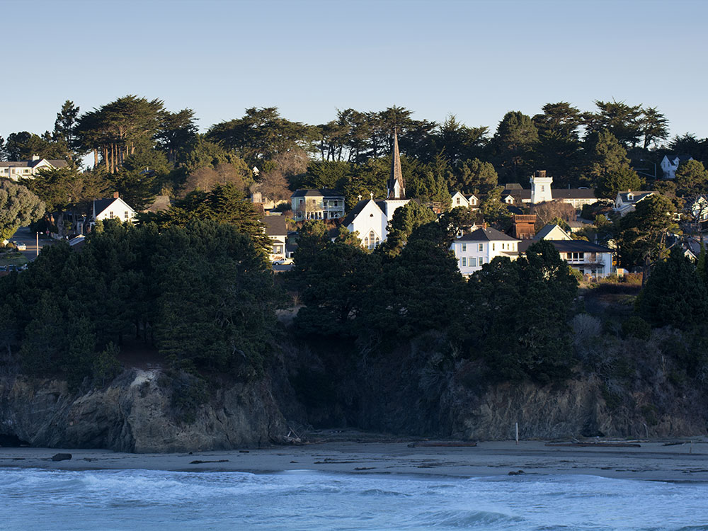
.jpg){kind=link}
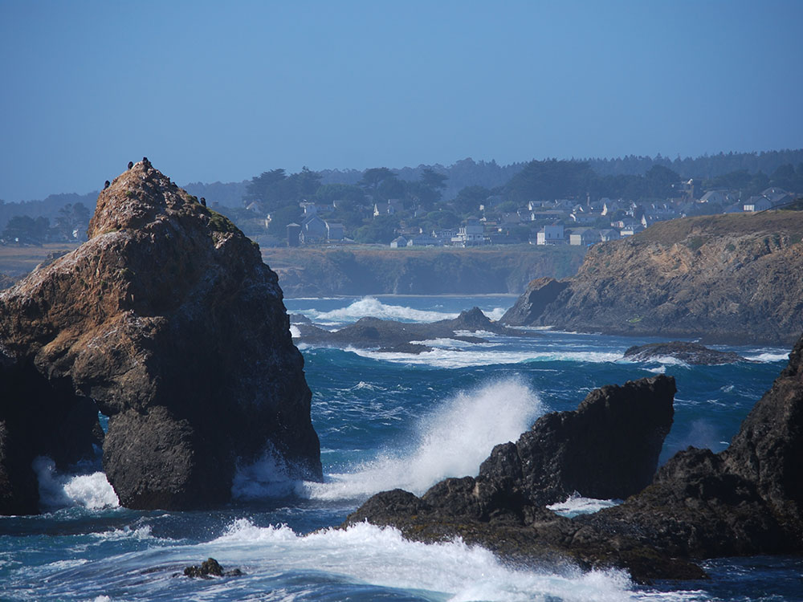

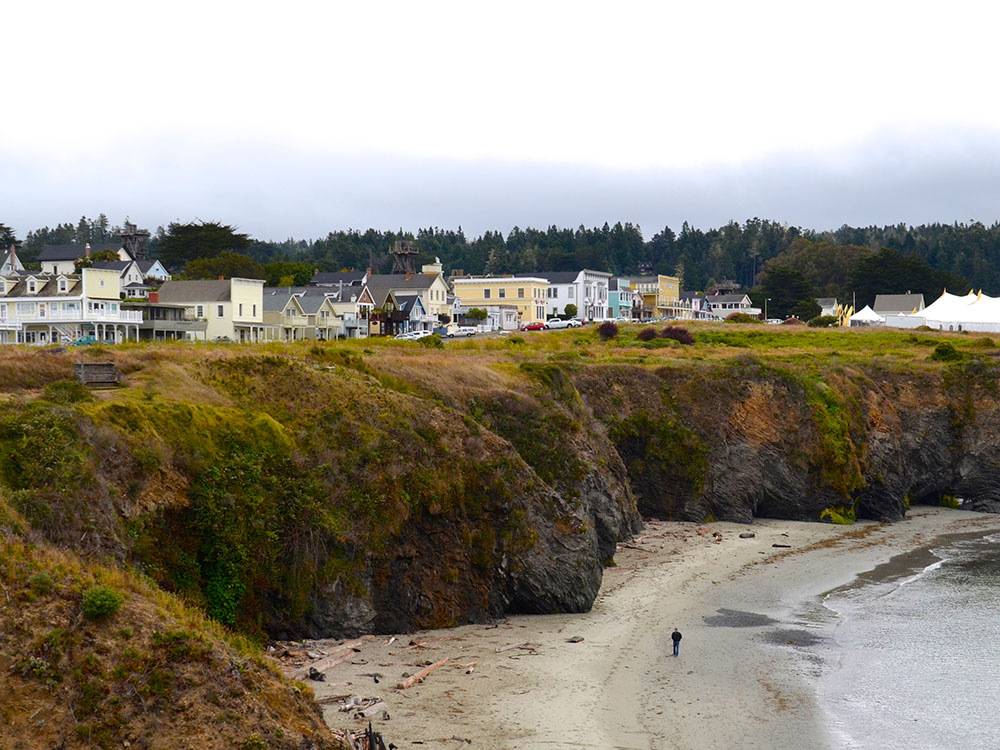

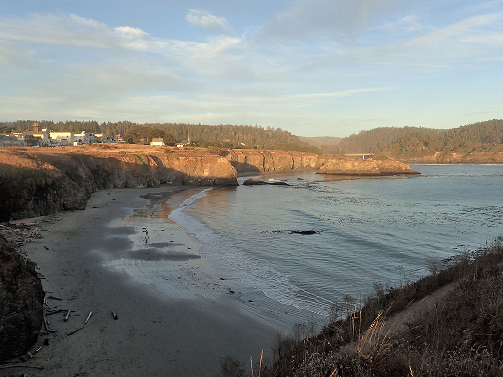